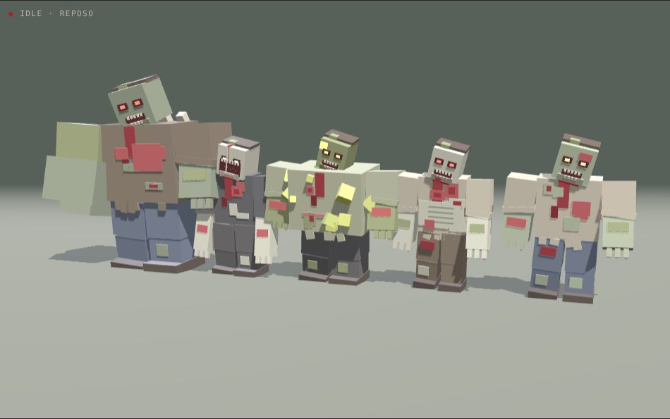

Construido con los mismos planos que usa el instalador de Studio: cada bloque es una Part y cada articulación un Motor6D. Las animaciones son los mismos datos.
NIGHT_ONLY.roblox/InstallInfected.lua en la Command Bar y construye los cinco modelos con Parts.sounds/*.ogg y pega sus ids en SOUND_IDS al principio del instalador.InfectedSpawn (o en Workspace.InfectedSpawns) donde quieras que aparezcan.